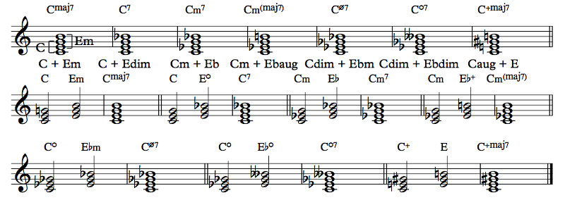
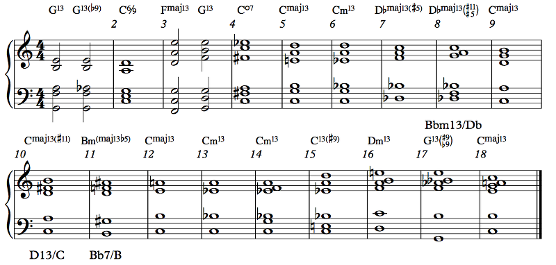

Popular music is a fairly wide genre that consists of, basically... Eh, I can't really define it. There are musical boundaries, and there are plenty of musicians that bust those musical boundaries, so there's little point in having said musical boundaries in the first place. But popular music does use a certain common harmonic language. You can trace the evolution of classical music; in the Common Practice period, harmonies were done in a particular way, which we just finished discussing. As the 19th century went on, that harmony became more and more varied and complex; as the 20th century and now 21st century go on, a set of modern harmonic tools has emerged that feature complexity and minimalism, leave room for atonality, etc. On the other hand, popular music built on its jazz roots and went in the direction of simplicity, while jazz itself also turned towards artistic complexity in the 1950's. Even from just a chord progression, it's often not difficult to tell which of these four realms we're in: Common Practice, modern classical, modern jazz, or popular.
In popular music, there's less focus on function than in Common Practice music, but at the same time, there's more of a focus on sound. Popular music progressions have less directionality than Common Practice and much less subtlety. Popular music also employs much more repetition, with songs often containing verses and choruses; sometimes an entire song will only have four chords that repeat! Popular music also borrows heavily from jazz, but where modern jazz has a focus on improvisation and complex sounds, popular music — including older-style jazz — simply uses some of the chords. A jazz chord is basically just a 7th chord, often with extra stuff or alterations. That's not a definition or anything; I'm just telling you the kinds of chords considered "jazzy". It's more than that. So let's talk about chord types in popular music.
In addition to the basic triads we all know and love, popular music has some other chord symbols for similar structures. Note that Common Practice music uses these too, just not in the same way.
Example 6.18
N.C. just means no chord, and it's a symbol sometimes shown when there shouldn't be any chord.
1 chords and 3 chords are nonstandard. A 1 chord is just a note; a 3 chord is just the 1 and 3, without the 5. You could also have a Cm3, which would be a 1 and b3 without the 5. It's not something people actually use, most of the time. Skipping the 5 of a triad is a usual enough thing to do that it doesn't need a special symbol. But it exists.
The 5 chord, on the other hand, is very heavily used in rock music, where it's called a power chord.
Yes, yes it is! The 5 chord is just an interval of a perfect fifth. Usually it's actually voiced with an extra octave, as in Deep Purple's Smoke on the Water:
Example 6.19
I added a version of the same line but with triads instead of power chords. It sounds muddier and therefore less powerful.
I guessed? Context is really helpful. Since I have G Bb C, it sounds pretty clear that I'm in the key of G minor. This would suggest a Gm triad for the G5 power chord, though rock music often uses major chords in minor keys. The Bb makes sense with a major third because the D was already in the previous chord. The big choice was the C major for the C chord instead of C minor, which is in the key signature. I think the IV is more characteristic than the iv for this genre and this particular song — it's the chord used on the word "smoke" during the chorus.. The Db really goes better with major, so the F can be a leading tone down to the E in the C chord. Besides, do I really want an Fb in G minor? I feel like that's a stretch.
This is also a good reminder that power chords, as well as sus2 and sus4 chords, do not tell you if they're major or minor. The third is missing. You can often infer it from context, but often you can't!
Come on, man, what do you think arranging is? In any case, I did it on purpose to show you how the original is so much more badass than what I wrote.
Another reason why power chords are popular is because they're easy to play on guitar. The lower strings on the guitar are tuned to E A D, so just fret the 6th string anywhere and fret the 5th and 4th strings two frets down. It becomes even easier with drop D tuning. The guitar is normally tuned, starting from the 6th string, to E A D G B E. Drop D tuning means tuning the 6th string to D instead of E, so you can hit a whole step lower than you could before. But this makes it really simple to play a power chord: barre the three lowest strings all at the same fret. One finger power chords. Hells yeah.
Sus chords are also ambiguous as to whether they're major or minor. In a suspended chord, the third is replaced with either the second (sus2) or fourth (sus4), and that note is supposed to resolve to the third. In classical music that happens. In popular music, that also happens, but it doesn't have to. Stephen Sondheim has been known to write entire musicals using only these two chords and never resolving to an actual triad.
It was an exaggeration. Do you seriously believe everything I say? (And also Into the Woods.)
Fuck. You really shouldn't. This is a lot of responsibility, oh man...
No, dude, I haven't lied. I may have made some jokes, but come on, you have a sense of humor, right? You should have been able to tell what was a joke and what wasn't.
So, suspended chords. This is how they resolve:
Example 6.20
Sus chords are ambiguous. That's part of what makes them awesome. You have a Csus2 like C D G. What chord is that? It could actually be a Csus2, in which case the D replaces (and resolves to) E or Eb. It could be a Gsus4, in which case it's the C that replaces a B or Bb. It could be a D7sus4, in which case it's the G that replaces an F# (or maybe F, but probably not). Until the chord resolves, you don't know where it's going. And, similarly, a Csus2 or Csus4 (remember that a Csus2 is a Gsus4 and a Csus4 is an Fsus2) can substitute for any of the three chords inside it. Any note in the chord can be considered the root.
No, rather it's the other way around: it's too rooted. There are two fifth relationships in the chord. A Csus2 has a C - G relationship and a G - D relationship, and you could even view the D as a root. It has three strong root contenders, as opposed to those other chords which have none. But it's ambiguous.
An important fact about suspended chords, which makes them sort of unique, is that they are dissonances that resolve to a triad on the same root. This means that the tension they create is melodic tension, not harmonic tension. Generally, dissonant chords like dominant 7ths want to resolve somewhere else, but the determining feature of a suspended chord is that it's actually a chord that hasn't clicked into place yet. While the sus2 and sus4 chords are the ones actually called "suspended chords", there are many other suspensions possible. For example, G C E could be considered a G chord with both a suspended 4th and a suspended 6th. In fact, some theorists analyze a 5 1 3 chord as V64 instead of I64 (in some cases), asserting that the root is actually the 5 and not the 1. Another type of suspended chord is something like 1 #2 #4, which is actually a diminished triad (enharmonically), that resolves up to 1 3 5. You can interpret this as a 1 that has "arrived" at the chord and a #2 and #4 that are late. Many suspensions are possible; you can get creative!
Classically, the seventh chord is always dissonant, because the seventh, minor or major, is always a dissonance. In popular music, though, it doesn't have to be. This is the influence of jazz, and it's more common in jazz-inspired genres (like bossa nova) than in more triad-based rock. Seventh chords are extensions of triads, so while classical music might use, say, a Dm triad, pop music may use a Dm7 or Dm9 (we'll talk about 9th and higher chords a bit later) or even a DmM7.
This dissonant ugliness:

Example 6.21
We can classify 7th chords based on their base triad and their 7th. The major 7th has a major triad and a major 7th; the minor 7th has a minor triad and a minor 7th. The dominant 7th has a major triad and a minor 7th, and that leaves one combination: the minor triad with a major 7th. It should be easy to hear why this is a relatively rare chord: it sounds extremely dissonant! That's because there's an A5 between the b3 and the 7, and that's one of the most dissonant intervals we have. The chord comes up most often as a tonic; you can hear it, for example, in the Duke's Harlem Nocturne. Another place that gets these sorts of dissonant chords is endings. You might think that composers want to end everything on a nice final tonic triad, but in jazz there's a tradition to do... not that. In the same recording of Harlem Nocturne I linked you to above, you can find that kind of dissonant ending where an mM7 chord might be found.
mM7 means minor-major 7th. There are a number of ways you can write this chord symbol, which is actually a nice surprise because most chords don't have symbols. In jazz, for example, – (minus) means minor, and ∆ (delta) means major 7th. So C∆ is C major 7th, and C–∆ is C minor-major 7th.
Anyway, that's actually not what I really want to talk about here. What I do want to talk about is the use of 7th chords as stable sonorities. Here's the intro from Chrono Trigger's At the Bottom of the Night:
Example 6.22
Of course the song goes on. To this day it's one of the saddest and most beautiful pieces of music I've ever heard, even in all its 16-bit glory.
Yeah... I thought they were 7th chords, but then I transcribed the recording and they're actually 9th chords. The good news is that the 9th doesn't actually do anything to the 7th chord. A Dm9 is just a Dm7 with an added note. Same with the Gm9 and the BbM9. But the point is that these chords aren't being treated as dissonant. The Dm9 is a tonic chord; it's happy; it's resolved. Neither the 7th nor the 9th requires another chord to resolve in like in the Common Practice tradition.
I misspelled their chord symbol. In a pop context, that's the expectation. That first chord looks like a Gø7/Bb, but that chord has a Db and this chord has a C#. What's going on here? It's actually really interesting. The second chord in that measure is a straight-up C#dim7/G (well, Bb is the bass, held from the previous chord, but you could make an argument that it's not really heard as the bass of this chord). It's just a viio7, leading back to Dm (Dm9, but whatever) in the next measure that I didn't include. What about that first chord? It's suspended! The F is not the 3 of the C# but the d4, resolving to b3 in the next chord. But the chord itself isn't so dissonant, and that's the beauty of pop chords: it's tonal, mostly, but you can abuse the hell out of enharmonics (isn't it good that we have 12-TET?), much like how Common Practice uses the aug6 chord.
We can do a tad of analysis here, because this piece is worth it. It uses a fairly common melodic device in popular music: filling time, with nothing of importance. Measure 1 has the rhythmic motif, basically a dotted quarter followed by an eighth note and a half note. Measure 3 has a variation; measure 5 has a variation; measure 7 doesn't have the motif exactly but the whole note and the accompaniment create the effect of the motif. But what happens in measures 2, 4, and 6? Nothing, really. The melody is just noodling around, as a pickup to the important motif being emphasized. Measure 8, on the other hand, is very important; this is called the turnaround. A turnaround is when the last bar in a verse leads back to the beginning of the verse. These chords are clearly the dominant in D minor. We've kind of arrived at F major in bar 7, with a tonic function, but we're going back to the real tonic by means of the turnaround.
We can also look at this beautiful introduction from a harmonic standpoint. What's happening in the harmony here? First, I chose not to worry too much about the 7ths and 9ths. The thing to do is to kind of ignore that they're there. They're only there to make the chord more interesting. So we have i - iv - bVI - bIII, with the viio42 in the turnaround (I'm considering those two as one chord). Now, many people would get to this step and declare victory (and they would never go through the logic of the previous paragraph). OK, Roman numerals acquired, analysis done. But we're here to learn music theory, not to make up numbers. The thing to notice in the harmony, in my opinion, is how we start in one key but end in another! We start with i - iv in the key of D minor, but we end with IV - I in the key of F. How does this happen? It's also good to note that we start out minor but end major. And not only major, but the first three chords are all m9's and M9's, complex chords. We get to measure 7 and we just have a plain major triad. What's going on here?
We can see how Mitsuda is manipulating our emotions. A i - iv motion is one that increases tension, while the reverse motion relaxes. The minor 9th chord played by the vibraphone slowly is a sad event, and by moving up a fourth, that sadness intensifies. We then move up to the relative major; the major 9th played this way is more melancholy than sad, and moving to the relative major is more of a sideways motion in terms of tension than a build or release. You notice that there's only one note of difference between the Gm9 and BbM9 chords. Gm9 is G Bb D F A, and BbM9 is Bb D F A C. They're similar! But the tension from the initial i - iv motion has not subsided yet, and the BbM9 moves to F for that purpose. The pure major triad is Mitsuda's way of reassuring us that everything's going to be all right. The dissonant dominant chords in the next measure, though, violently wrest us away from that feeling: no, it's not all right! And the piece goes on, with most of this segment repeating but with more instruments (see why I didn't feel like transcribing the rest of it?) and a much more hopeful ending, with percussion and rhythm in the next section, high instruments, etc., until everything comes back down and the piece loops again, because, after all, this is still on the SNES.
I mean this:
Example 6.23
I honestly don't remember ever seeing it before in music. I'm sure it's in something; I just can't recall anything that features this chord. It's a C+M7 — a C augmented triad with a major 7th. It's different from a C+7, which is a dominant 7th with an altered fifth. I listed it here for completeness. These are all of the 7th chords that arise as a combination of two overlapping triads (the C+7's upper three notes don't form a triad, and combining two augmented triads yields a repeated note).
In particular, major 7th chords have a major base triad and a minor upper triad, so, at least to me, the feeling is complex: it's major, but also a little minor. The reverse is the case for the minor 7th chord; there, the base triad is minor while the upper triad is major, so the feeling is minor, but also a little major.
Remember the deep listening you did in the previous chapter? It would actually be a nice thing to do more of that, but with chords. Unfortunately, there are just too many chords in the world to properly do this for all of them, but you can do it for the chords we're looking at. Just find a piano (or the Offtonic Keyboard), play the chord, and just listen to it for a while as you try to figure out how it makes you feel. Of course, there's a flaw in this methodology, a big one.
When you listen to a chord long enough, it will become your tonality. You can't deep listen to chords — or intervals, really — in context, and a chord sounds very different depending on whether it's pre-dominant, dominant, or tonic. The good news, though, is that in popular music. any of these 7th chords (well, maybe not the dim7) can take any of these functions.
Ever heard of the blues?
Example 6.24
The blues follows a pattern. It's not too strict, but all blues songs have some variation on this basic 12-bar chord progression: I I I I IV IV I I V V I I.
Yep. All of them. If it doesn't have a chord progression like this, it's something other than the blues (doesn't mean it's bad music). You can debate whether a particular chord progression is a variant of the blues progression or not; there are edge cases. It can be fast like this. It can be slow. It can be minor. It can be 24 bars instead of 12. You may even be able to squeeze it into 8, but that's borderline. You can replace a bunch of the chords with other chords (I did that). But, on some level, it's gotta be recognizable as a variant of the blues progression. Here are some great examples.
Eh? I like it. A fairly common feature of the blues is that the last bar is a turnaround instead of a I, which is usually a V. All I did was that; I just made it... "fun". Yes, that's the word, "fun"! The blues is (to some) surprisingly tolerant of dissonance, and we'll hopefully talk about that at some point in the future. We will definitely talk about the #9 in this chapter, though, so hang on tight and just enjoy the sound of that augmented octave. Oh yes.
So you see how, above, I defined the last bar of the blues progression as generally a I chord? That's how I wrote it too, but then I decided that I wanted a turnaround instead. The result is actually some weird combination of a I chord on C and a V chord on G. I wrote it as a G7#9/C, but the idea of playing two different chords at once is called a polychord. This measure is basically a G7 and a C7 at the same time, with the third missing in the C7. Some people write polychords by writing essentially a fraction, with a horizontal bar rather than a slash, which in this case would have a numerator of G7 and a denominator of C7. I feel like this sort of thing is pushing at the limits of usefulness for chord symbols. If you need to describe a chord that complex, just write it using notation! That's what it's for!
But... we were actually talking about dominant 7th chords, weren't we? It's pretty commonplace in blues to have dominant 7th chords on the I, IV, and V in the blues progression. In classical music, the dominant 7th always resolves a fourth up (or it at least pretends to do so and then doesn't). Here in the blues, though, that doesn't have to be true. If you repeat the dominant 7th enough, you stop feeling the pull. It's all about context. Take your b7 and melodically resolve it down to 5 or up to 1, for example; do that often enough and it becomes the expected behavior. b7 doesn't usually go to 1 classically, so emphasizing that particular motion instead of resolving it announces your intention to work in a different harmonic language from classical music. The b7 becomes part of the sound, not an active dissonance that needs to be resolved.
A last point to make about the blues: the bass line. If you listen to the examples, most of them feature this sort of bass line, kind of going up and down quarter notes (with some elaborations) in arpeggios. This is called a walking bass, and it's very common in the blues and other jazz idioms. It's nowhere near mandatory! There are plenty of other patterns too, like the shuffle.
The blues commonly uses dominant 7th chords in tonic/pre-dominant positions (though chord functions are kind of moot in the blues progression; you shouldn't necessarily think of pre-dominant as setting up the dominant, which the IV chord in blues definitely does not). In extended tonality, though, *non*-dominant 7ths can also serve as dominants! It's not so common for major 7ths to be dominants, but for minor 7ths it happens pretty often (the v7 is diatonic to natural minor), and even for half-diminished 7ths it happens on occasion. In major, the viiø7 is a common substitute for the V7 (it's a rootless V9), but I'm not talking about that. I'm talking about a vø7. Here are the two in action:
Example 6.25
The first song is an incredibly well-known Israeli love song, with lyrics inspired by the Song of Songs in the Bible (a lot of love songs in Hebrew use that imagery). The best arrangement ever written for this song can be heard in Techiya's album Technetium. (I'm half joking and half extremely happy with how it turned out.) The second song is a Ladino romance. Ladino (actually, Judeo-Spanish; if I get this wrong I know there'll be some Jewish linguists on my case about it) is the language spoken by the Sephardic diaspora, the Jews who were expelled from Spain in 1492 and settled around the Mediterranean, including in Turkey, Bulgaria, Greece, Morocco, Algeria, etc. (They went to the Middle East too, but the cultural story gets complicated with the Sephardim and the Mizrachim so I'm not going into it.) This particular Ladino romance is a love song, like many of them are. I haven't been able to find a YouTube recording I'm happy with; I wrote an arrangement but I don't have a good recording of it.
Ehhhh... We'll talk about it next chapter; how's that? The thing is, this song isn't in a key, because keys are major or minor. It's in a mode. Specifically, the mode is phrygian dominant, which goes 1 b2 3 4 5 b6 b7. We'll talk a whole lot more about modes in the next chapter. But the thing to notice is that, in this mode, the 7th chord built on the dominant is 5 b7 b2 4, which is vø7. It should be noted that the main dominant-function chord in phrygian/phrygian dominant is the bII, but the vø7 works too. The relevant bit to answer your question, though, is that our key notation is not adequate to describe modes, and phrygian dominant is especially caught in the middle between major and minor. I usually describe this mode as minor, even though its tonic triad is major. You might do it differently.
Next up is chord extensions, but before we do that, there's a kind of oddball chord type we should get out of the way first:
A 6th chord is a triad with an added major 6th, like so:
Example 6.26
This makes perfect sense for the major 6th chord. 1 3 5 6. But people seem to get really confused over the minor 6th chord, so it's good to make sure this is clear: an m6 chord is a minor triad with a major 6th. A minor 6th chord does not contain a minor 6th interval with the root!
None! Well, almost none. The question is which note serves as the root of the chord. A 6th chord is considered an added-note chord, since the 6th is not actually structural. By this I mean that the chord is a plain old triad, but the 6th has been added just to change the sound and not to alter the function of the chord. In a 7th chord, that note is the most important note in the chord, since it's the root. But it can be ambiguous. It often is ambiguous. I'm mentioning these chords separately because... well, you'll see why. They're the only extended chord type with an even number! It doesn't fit neatly into our triadic system. Yet, it shows up pretty often, because the 6th is treated as a fairly stable note.
The major 6th chord is often a tonic or a pre-dominant; the minor 6th is generally more of a pre-dominant. It doesn't get used as a dominant because its tension is just not in a place that points it towards the tonic.
The major 6th and minor 6th chords are not... unique chord types. It's difficult to explain. Basically, much of the time you can add a 6th to a triad and it will sound "good". The 6th isn't the only note you can add, but, again, the 6th isn't important. It's what's known as a color tone, a note that changes how a chord sounds without changing the function. First example is Summertime, from Porgy and Bess:
Example 6.27
Porgy and Bess can be considered a musical or an opera depending on your definition, but Summertime became a jazz standard, with a wide variety of ways to play it. The excerpt above is taken mostly from a "Best Songs Ever" songbook, but it's practically the same in every songbook and that includes the official rehearsal score for the show, except that I didn't bother to include the vocal part. This is how piano parts are often written in songbooks. The chords are mostly the ones given there too, except that the book has a Dm7 at measure 14 instead of a G11, and that chord is obviously a G11.
We'll get to that! Like, next! But before we do that, it's nice to point out a couple of things about this arrangement. First, the harmony. This is in A minor. But there are F#'s all over the place, right? Is that melodic minor? Eh. Sure? But... not really? I mean, I wouldn't make that distinction, personally. It's just A minor. But it brings home the point that the 6 of the Am6 is not in the A minor scale. Some people get confused by that. The chords otherwise are mostly pretty simple, even though they sound complicated. The chord symbols also don't specify inversions. That second chord in measure 1 is an E7/B, but the /B is not actually mentioned. I think that's an oversight, because the bass motion is pretty important here. Another chord that I don't think is important is the F6 in measure 5. That's just an inversion change for the Dm. I mean, it's Dm7/F, which is spelled the same as F6, but unlike what I've been saying, it's not an F triad with an added note. The D is the most important note in this chord. In measure 6 we get an FM7 that I also think is not a separate chord (I think the E is just a non-harmonic tone), but we also get an interesting D#dim chord for just one beat. This is an example of a passing chord. It's really just sandwiched between two other chords and it arises from chromatic motion from the previous chord to the next one (well, in this case not so much, but close enough). The D#dim kind of... smooths the way to the E, only for that one beat. Secondary dominants are often used as passing chords just to create a little bit of interest when moving from one chord to the next. The important thing is that the D#dim is not important on its own; it simply connects the Dm7 to the E.
Another little bit of interesting harmony: measure 14. IV - bVIIdom7 - i is an example of a so-called backdoor progression (the dom7 of the bVIIdom7 is actually important here as part of the voice leading). This is a cadence that resolves in a kind of unexpected way, and it's a fun thing to do in jazz. The "front door" way to do a cadence is with a V7. The backdoor progression is a type of plagal cadence, which probably means nothing to you right now but it will mean something someday.
I want to also talk about the way this arrangement is set up. A lot of people think that music theory is just chords and scales, and they miss out on the important stuff. I don't want to do that, obviously. This arrangement is very typical of songbook arrangements for voice and piano. You get any songbook and it will look the same. The right hand plays the melody (which is also in the vocal part) as well as parts of the chords, while the left hand plays the bass and sometimes other parts of the chords (and sometimes not).
Because the people who sing out of songbooks are not necessarily great singers! The songbook publishers count on hyper-competent pianists (well, the parts aren't usually very difficult, but still) helping along some guy or gal who is willing to be embarrassed in front of his/her friends. You've been singing intervals and singing through a bunch of music, so it may not occur to you, but a lot of people have difficulty singing the right notes, and they need all the help they can get. Hell, many people can sing but they can't even read music — imagine being musically illiterate! — so they need the piano to guide them.
To be clear, this is good. Singing is like math: it's really easy and anyone can do it, but Americans are irrationally afraid of it for some reason. The consumers of songbooks shouldn't need to be skilled singers. They shouldn't need to know music theory. They should just be able to sing to their hearts' content. Putting the vocal melody in the piano part helps them do that, even though it can also get in the way of the singer if he or she wants to improvise or even just use more rubato! But if you're a good singer, you can just ask the pianist to leave out the melody whenever you want to go off-script. For example, when I sing or play this song, I like to use an Eb in measure 14 instead of an E, but only in the second verse. If a pianist is playing the E, it's going to clash with my Eb.
Rule 0 would say yes, but you bring up the very interesting question of the composer's intention. If you purposely change a composition, to what extent is it still that composition? Have you blasphemed it by changing it? I don't actually know the answer. I watched the movie Saving Mr. Banks, which was about Walt Disney's adaptation of P. L. Travers's Mary Poppins. Disney's vision for that film (one of the greatest movies ever made) was very unlike Ms. Travers's stories of Mary Poppins in some pretty important ways, and Travers did not want to give Disney permission to adapt her work at all. (I'm not going to spoil the movie by telling you how that permission was finally granted.) To what extent do content owners actually have the right to control how you interpret the work? I think the answer here is that it varies. But there are legal answers and there are moral answers. I've had my music played in "wrong" ways before, and it sucks. I've had other people make changes to my music without my permission. And I've certainly done the same to others' music. I've decided that the way the composer/arranger wrote it was not good and changed chord voicings or rhythms or dynamics. But I also think that this is part of making music. When you write a piece of music, you may have a vision for how it ought to go, but it's not up to you to realize that vision (unless it is). Unless I'm leading the performance myself, which these days happens fairly often with my a cappella group singing my arrangements, it's not up to me. The performers get to make those interpretive calls. The performers get to make cuts where appropriate or add in something else or fix notes or change words or whatever. And when I'm singing or playing Summertime, I'm going to do it my way even though George Gershwin did it his way.
But I'm not going to change the chords. Not because chords are sacred — they aren't. I change chords in music all the time; it's one of my favorite ways to play around on the keyboard. I'm not going to change the chords because this song's chords are kickass the way they are, thanks to the magic of 6th chords.
This brings us to the real magic of pop chords...
You know about triads. You know about 7th chords. This is what happens when you continue that process:
Example 6.28
The 9, 11, and 13 are called chord extensions or, in jazz, simply tensions. They're equivalent to the 2, 4, and 6, and they're always the 2, 4, and 6 unless noted (like if it's marked b9, #9, #11, or b13).
Not voiced like that! Well, not usually. Some composers do write big tertian structures like these. In fact, you can keep piling thirds to make a 15th chord, a 17th, a 19th, etc. If you use accidentals, you can avoid repeating one of the notes. But it's just going to sound like more of the same. I think 9th chords can be practically voiced this way, but 11ths just don't sound very good and 13ths are basically just walls of sound in this voicing.
Good of you to notice. We'll talk about this more when we discuss jazz chords in more depth. The real difference is in the note that feels like the root, which is usually the bass note. The fact is that you can voice a chord in such a way as to make it sound like the root is one thing or another, even if the root isn't in the bass. That makes the harmony murky, but sometimes you want murky harmony, right? Rule 0.
Let's take a very brief digression and talk about jazz chords while we're at it. Modern jazz is based on improvisation. The band is playing something, and the soloist is just makin' shit up. How does the soloist actually play together with the band? They both use the same chords. In jazz, the chords are (usually) all 7th chords, but they aren't really: they're actually 13th chords, because even though you may see something like C∆ (the ∆ means M7, remember), you can actually still play the 9, 11, and 13 (you may be... discouraged from playing the 11, actually; it's sometimes referred to as an "avoid note"). So you can actually play the entire C major scale over that C∆ chord. And the C major scale, wouldn't you know it, is the CM13 chord, just laid out in seconds instead of in thirds! The chord symbols in jazz actually refer to entire scales. As a 'comping pianist (meaning you're doing accompaniment), you get to pick how you play those chords, what notes you use and how. You don't have to use all 7 notes. You don't even need to use the root, because the bass player hopefully has that one covered. Each chord in modern jazz actually represents an entire scale. The ∆ chord usually represents a major or lydian scale (1 2 3 #4 5 6 7); the –7 (m7) chord usually represents a dorian scale (1 2 b3 4 5 6 b7); the 7 chord usually represents a mixolydian scale (1 2 3 4 5 6 b7); the –∆ (mM7) chord usually represents a melodic minor scale (in jazz, the ascending form is used, 1 2 b3 4 5 6 7); the 7alt chord usually represents an altered scale (1 b2 #2 3 b5 b6 b7) or octatonic scale (1 b2 #2 3 #4 5 6 b7). We'll talk about these scales and other scales in the next chapter, on modes, and we'll revisit jazz chords when we have a better grounding of these different scales.
Why, yes I did!
It's jazz. Stuff gets misspelled all the time. Learn to live with it.
...Also, there are reasons. We'll talk about them later. But it's worth noting that Western music puts a lot of bank on 12-tone equal temperament. The fact that we can call them #2 and 3 instead of b3 and b4 (which is what they really are) speaks to the magic, and it's really fucking magic, of enharmonics.
Many ways, and it depends on the instrument. First, most of these notes are actually optional. A 13th chord doesn't need to have all 7 notes to be called a 13th chord. The guitar, for example, is great at playing 4-note chords, since there are 4 usable fingers in the left hand to fret the instrument and barres are not always practical. Generally, the notes you need in the chord are the 1, the 3 (or b3), the 7 (or b7), and the extension. If you skip on the 7th, the chord is no longer an extended chord and becomes an added-note chord. For example, C E G D is a C(add9), not a CM9. (The exception is the 6/9 chord, which has a 6 and a 9 but no 7, so C6/9 could be voiced C E A D.) The 5 is very often skipped. The 3 can be skipped (don't let anyone tell you otherwise); but since it's so important to determining the quality of the chord, it's not often skipped. But it can happen. I would have no problems voicing CM9 as C G B D or Cm9 as C G Bb D.
Because the dominant chord has that tritone. It's harder to justify skipping the 3 on a dominant chord. That said, the third is often skipped on dominant 11th chords.
The 9th, 11th, and 13th are compound intervals, meaning that they're an octave plus a second, a fourth, and a sixth, respectively, but they don't actually have to be up so high. You could have those notes down an octave; it wouldn't change the name of the chord.
Also, if a note is altered, it probably should be included! A C7b5 should probably have that b5! (On the other hand, a C7#11 doesn't need the 5 at all.) Speaking of altered chords, usually altered chords are written as 7th chords. C7#11 is technically C E G Bb F#, but that doesn't mean you can't add a D. (Though maybe you'd want to write that C9#11 if you wanted the D.)
We've already seen some chord extensions and altered chords in previous examples. Back in Example 6.4, I reinterpreted various slash chords as extended chords, and that's actually a pretty common voicing. Example 6.22 has m9's and M9's (though the 9 disappears in measure 6, I just noticed). Example 6.24 has a G7#9/C, fun chord! Example 6.27 has the interesting stuff. A B7#9 in measure 7, E7b5 in measure 8, and a big ol' G11 in measure 14 (look ma, no third). In the previous chapter, Example 5.48 has an E7#9 (it's the chord in the box).
So, knowing about chord extensions, we'll spend the next few sections going over specific extensions and alterations that can be given to chords. Just remember that just because a chord symbol doesn't mention a note doesn't mean that you can't play it in the chord. Chord symbols are not actually as descriptive as you may want them to be!
The 9th is the least controversial note you can add to a chord. It almost always sounds good (unless it's in direct conflict with the key, in which case it probably still sounds good anyway but there's at least a reason to want to not use it). When added to a major chord it usually intensifies the brightness, while when added to a minor chord it usually intensifies the darkness. Witness:

Example 6.29
A 9th chord contains a 7th. If you want a chord with a 9th but no 7th, you have to use "add9". "add2" is synonymous. You can see how in the second chord in each group I used add2 instead of add9, which makes sense because the added note is a second above the root rather than a ninth, but actually any voicing for Cadd9 is totally valid for Cadd2 and vice-versa. The extensions can be in any octave.
I'm not entirely sure. I think it has something to do with the major second between the 9 and the 3 as well as the minor second between the 9 and the b3. The 9 is felt as needing to resolve upwards, so to me it feels like there's some sort of... striving. But when we look at the #11, which has an even stronger effect on major chords, I don't think the logic holds. I'm not making any sense, am I? I don't know why this is the case. Keep listening and work out your own hypotheses, and then experiment with them in your compositions. That's the way music is made!
9ths also interact with 7ths. A M9 or m9 chord is pretty much the same as an M7 or m7 chord, respectively, in terms of affect.
No. To affect something means to change its behavior; to effect something means to cause it to happen. Both of them are verbs. An effect is something that happens as a result of something; an affect is an emotive quality. Both of them are nouns, too. Something effective is good at what it's supposed to do; something affective is related to mood. In this case, I'm talking about the emotive quality of M9 and m9 chords compared to M7 and m7 chords, respectively: their affect.
The 9th makes a third with the 7th, though, so that's another interval, another interaction, within the chord. The 9th can even make the upper part of a chord sound like a different chord from the lower part. The 9th is a fifth away from the 5th, but that relationship is often not very important, since the 5th reinforces the root so much.
We've already seen 9ths in many examples. Let's look at one from popular music, the chorus from Linkin Park's In The End:

Example 6.30
The first chord in the chorus is a minor add9 chord. What's really interesting about it, actually, is how that's set up. The singer is singing over the rapper during the verse, and at the end of the verse, he just holds that F for several bars, making a pedal point on the 9th.
A pedal point is when a note is held for several measures while other music goes on around it, possibly including changing chords that are dissonant against that pedal point. In classical music, pedals are usually on the dominant in the middle of a piece and on the tonic during the ending. But Linkin Park does a pedal on the supertonic, the 2nd (or the 9th; you can call it either), while chords happen. When the chorus comes, the singer hits that note again right at the downbeat of the first measure. The whole pedal point is a buildup; the downbeat of the chorus is the resolution to that buildup.
Analyzing this, we see that there are really just four chords, repeated: i - bIII - bVII - bVI. This is an incredibly common chord progression in popular music. Many genres of popular music rely on these repeating four-chord progressions, and In The End is no different. Often, there'll be one repeating four-chord progression for the verses, a different one for the choruses, and maybe a third one for the bridge. More musically sophisticated acts will do something more interesting than repeating four chords over and over, but there's nothing wrong with it, and it can be very effective, as in this piece. The chords are voiced as power chords (1 5 1), but with a higher guitar string playing the third in a different plane of sound from the chord.
When you hear a piece of music, not all of it hits you in the same way. Hopefully. Your brain (if it has developed correctly) should be able to separate out different sources of sound based on various characteristics, like timbre, pitch, rhythm, location, etc. Your brain kind of groups the sounds that it hears at the same time into logically distinct pieces, and you can focus on one of those pieces or another. For example, a person talking will (hopefully) be easy to separate from soft piano music at a hotel lobby. It's the same way in a piece of music. These groups are called planes of sound. The chords in the bass and the guitar are really difficult to hear individually; they're basically just all one sound. I don't even know if there's a bass and a guitar, just a guitar, or what. That's the power chord in the bass staff in the example. On a completely different plane of sound is the singer's voice, and on a different one still is the high note in the guitar, playing the third. During the verses, the rapper and the singer are also on different planes. The drums live in their own plane, completely separate from us mortals. Since we don't hear sounds on different planes as being closely related, we can tolerate a lot of dissonance between planes. If the singer is scooping between notes or otherwise singing notes that aren't in tune with the chords (I don't mean singing badly, I mean singing out of tune for artistic reasons), that's usually not a big deal. On the other hand, if the guitar is playing out of tune with itself, that's probably going to sound awful. Hell, rapping isn't in tune at all (rapping/speaking does involve pitches, by the way; we just don't usually pay attention to them exactly), and that never clashes with the chords!
Final bit of analysis here: the melody! Let's not forget the melody. It appears that Linkin Park did! No, that's a joke. This melody is actually very effective, even though it covers barely four notes (except the last measure)! For one, the broad melody is a direct continuation of the slow notes sung by the singer during the verses, which was in contrast with the fast rapping that was going on at the same time. For two, this melody is just four bars that get sung twice (the last bar of the second time has a bit of a coda), and in those four bars, there's enough for some motivic writing. The pickup, Db Eb F, happens again two bars later, but at measure 3 it resolves to Db, the b7 of the scale, and at measure 5 it resolves to Eb, the tonic. Another feature worth pointing out is the syncopation. The only time the melody actually lines up with beat 1 of the measure is in the first full bar (which here is measure 2), and again when it repeats. Landing a melody on the downbeat is much stronger than what the other measures do, which is to do it on the and of 4, half a beat early. This helps us see that the downbeat at measure 2 is really a kind of arrival, after the buildup during the verse. Not only does the melody arrive there, but the background parts also get more intense. The music is chill during the verse, but it's not chill at all during the chorus. And! The lyrics are not exactly positive, right? "I try so hard and get so far, but in the end, it doesn't even matter." The singer's arrival at measure 2 on "hard" is exasperated at the effort he has had to put in, but the mood settles into despondency for the rest of the phrase. Harmonically, the first chord is the only minor chord in the chorus, and with that 9th, it drives home the exasperation.
Now that you mention it, I don't see it either. I guess it's implied by the fact that it's there during the verses? Either that or it's just missing from my arrangement, but you still hear it as minor even in the synthesized version. What do you think? You can call it an Ebsus2 instead of Ebm(add9), but I think the feeling is just too minor not to call it that.
One more important chord type with a 9:
Example 6.31
The 6/9 chord is exactly what it says: a chord with a 6 and a 9. It does not have a 7, since that would make it a 13th chord. As the rhythm suggests, it's a common chord to use in bossa nova. Its special sound comes from the P4 between the 6 and the 9 in the chord. The 3 and 5 are both optional (though you'll probably want to have at least one, but you don't need both). To me, the 6/9 chord feels more like a 6 chord with an added 9 than anything else, but it's a bit more ambiguous than the 6 chord. I wouldn't use a 6/9 chord as a final chord in a big boisterous Broadway tune (I'd totally use a 6 chord for that; check out the final chord around 7:30 in Springtime for Hitler, from The Producers (2005)). In a more relaxed piece, though, the 6/9 fits right in on the tonic.
The b9 is the least controversial note you can add to a dominant 7th chord, especially in minor, but it's usually very dissonant in any other chord. Minor ninths in general tend to be sharply dissonant, as we discussed in the last chapter, but how dissonant they are will depend on what else is going on. Check this out:
Example 6.32
Exactly. Except the first one, anyway. The 7b9 chord is perfectly normal in minor, as you can see in the first two bars. The diminished 7th chord can be thought of as a 7b9 chord without the root. The notes of this chord, when on the dominant of the scale, are 5 7 2 4 b6, and all of these notes lead naturally to the notes of the tonic triad, 1 b3 5. The b6 resolves down to the 5 while the 5 resolves up to the 1, and all is well in the world.
In the 7b9 chord, the b9 adds more dominant flavor and tension to the chord and that's it. But in all of these other chords, the b9 adds ugliness and dissonance. (Well, ugliness is totally subjective. I find the dissonance beautiful, personally.) It doesn't really need to resolve in any particular direction. It's just... there, sounding disturbing. I find that b9's (and #8's) in chords help create an unsettled feeling.
Yeah. I wanted to keep up the theme. I like that last chord, personally, with the #9. We'll talk about that in just a bit.
There is something you can do to lessen the evil of the decree, though.
Sure. Or you can get rid of the b3.
Here, listen to this:
Example 6.33
In jazz, that first chord is called a susb9 chord (or a phrygian chord). Why not 7b9sus4? Because jazz musicians don't feel the need to mention every note, and we'll see why when we talk more about jazz chords. The important notes of this chord are the 1, b9, and 4, and the 5 and b7 can also be in there, but the b3 and b6 don't sound so great (I mean, maybe you think they do; you can go ahead and use them in your own music).
The interesting thing is how much the second chord clashes compared to the first chord (the third and fourth chords are just the same chords rewritten as slash chords, which gives them a sense of polytonality — multiple tonalities at the same time). The 7b9sus4 chord is mysterious; the 4 and b9 play well together, in a variety of ways. With the b7, you have a minor triad on the b7; without, you at least have the major third (or minor sixth) between the b9 and the 4. There's a sense that there's more than one root, and the relationships of the b9 to that secondary root are stronger than to the actual root, so the dissonance gets hidden. On the other hand, in the second chord, ain't no hidin' that. The C minor triad is out and proud, and the b9 is an added note, not an integral part of the intervals of the chord. But note how the situation is less clear in the fourth chord. When you voice it as a slash chord, the Db is now part of that Eb7 chord, and the root, the C, is what feels out of place. You are, of course, totally free to disagree entirely with my analysis. I'm not so sure even I agree with it.
Yeah, kinda... not ever, really. It has an interesting sound, though. Mark Levine's Jazz Theory Book mentions Kenny Barron's Golden Lotus and a bunch of cases where it shows up only very briefly as a passing chord. The Golden Lotus example appears to be using the chord more as an explicitly Asian-sounding pentatonic scale (which we'll come across eventually, as it's used in Japanese music) played all at once than an actual chord — a macroharmony, I guess, rather than a regular harmony. But you can use the sound however you want.
As for the 7b9 chord, that's extremely common, but I'll give you some examples. In Sunrise, Sunset, from Jerry Bock's famous theatrical masterpiece Fiddler on the Roof, you can hear this chord pretty much every time there's a dominant chord. In many Brazilian bossa nova songs, you hear it as the second chord, but in inversion: Insensatez ("How Insensitive") by composer Tom Jobim and poet Vinicius de Moraes, for example, begins with something like Bm7 - F#7b9/A# - Am6 - E/G# (when the lyrics come in, not the intro). The second chord is a 7b9 in inversion. Apelo, by musician Baden Powell and Vinicius de Moraes, begins with basically the same three chords but goes to a different fourth chord. This recording also includes the Soneto da Separação, another Vinicius poem that he simply reads over the chords of Apelo. But the much more famous song in this lineup is Corcovado ("Quiet Nights With Quiet Stars") by Tom Jobim. All three of these have been recorded and re-recorded by numerous musicians.
Now, E7b9/G#, on guitar, is usually voiced G# F B E. This actually has a few interesting variations, which we'll learn more about in a bit when we talk about the 13 and b13, but let me show them to you now:
Example 6.34
The first eight bars resemble the beginning of Corcovado, mentioned above, in a simplified format, but the thing to look at is the second chord, the E7b9/G#. This is the dominant of the Am7, but the chord is just not voiced in a way that provides tension towards it. The F feels more like a suspension than something that wants to resolve in the next chord. Originally in this example I had the E7b9/G# simply resolve to Am7, but that just didn't sound satisfying. The chord only works the other way around. Why? Because the F wants to resolve down to E, but the E is already in the chord and doesn't want to resolve anywhere. When we have the root in the bass of a dominant chord, it wants to resolve up a fourth (or down a fifth), but this root is at the top and it doesn't have anywhere to go in an Am7 chord. So the chord goes to Gm6 instead: the F gets its resolution, but the context changes to something fresher. This is an example of why putting extended chords in inversions is a tricky proposition.
The other two sets of chords have almost the same notes as the E7b9/G#. That chord is G# B F E; in the second set, we have a G13 voiced G B F E, just one note different, and in the third, a G7b13 voiced G B F Eb, just one note different from that. In all three cases, we have a bass over a stack of fourths, but the F - B fourth is augmented, and in the third chord, the B - Eb fourth is diminished. I love that sound! The G13 resolves to a C major chord (6/9 in this case, but it's a type of major chord) and the G7b13 resolves to a C minor chord of some kind. In all of these cases, we're using the inherent dissonance in that stack of mismatched fourths to propel us to the resolution, with the bass note providing harmonic context more than anything else. I see the G7b13 as the minor version of the G13 (as in, the G7b13 is the dominant in C minor, while the G13 is the dominant in C major, but both chords are dominant chords, not major or minor). I find that these voicings have a pleasant... crunch to them.
Interestingly, I've seen (in a sadly now-defunct site) the E7b9/G# chord written as — get this — Abm13#5.
Let's break it down, shall we? The notes are G#, F, B, and E. The G# is enharmonic to Ab, and that's the bass of the chord, so it's probably the root, right?
Good, you're learning! But not everyone else is, apparently! But in this case it's not too hard to see why it could be the root, since the G# has a third, the B. If you're hearing this chord on a guitar and figuring out how to play it, you don't know if the notes are Ab and Cb or G# and B, and honestly you may not really want to care. The F is an M6/d7 up from Ab/G#, so this makes it a 6th, or a 13th. I mean, the 7th is usually required in extended chords, but...
See, chord symbols are fungible. You can kinda play whatever you want on them. But that's another reason why this chord is confusing. From the point of view of the bass as the root, the notes are (enharmonically) 1 b3 #5 6, which is a m13#5 chord or something like that. Why would you even think of the root as something other than the bass?
No, it kinda does. But at the same time it also kinda doesn't. But this is when you realize that if you simply drop the F, you have G# B E, an obvious E major triad in first inversion, and you realize that, hey, you're in the key of Am, so this is the V chord, the dominant. And which note makes sense to add to dominant chords? The b9, the F. This is obviously an E dominant chord with a b9, or, in other words, E7b9. You're just not playing the D, but you could be and it wouldn't change the chord, just the voicing. Here's how that sounds:
Example 6.35
In fact, in Corcovado (in Am), this added note is in the melody over this chord. It doesn't sound like anything. In Insensatez and Apelo, the melody (when transposed to Am), the melody alternates between E and F, but in Corcovado it's between E and D. You could even think of the E as the added note in that second chord, with the base chord being a G#dim7.
Usually, but in this chord, the G# can drive by itself, thank you very much. Part of it is that this chord, despite being the dominant, doesn't actually have a strong pull towards the tonic. It's actually pulling away from the tonic. And that's because the E isn't really felt that strongly as the root; instead, the chord feels like a G#dim7 chord (missing the b5), with the E held over from the previous chord, making these quartal dissonances with the other notes as a decoration. Perhaps the chord should be labeled G#dim7#5.
Welcome to analysis! There are often multiple valid ways to think of chords. Chords can be ambiguous. I think that's one of the nice things about the guitar. On the piano, you can just play all the notes, but on the guitar, you only have four fingers with which to fret things, and you only use four fingers to pluck the strings, so you're mostly limited to four-note chords. You have to be economical, and you get to play sounds that can be reinterpreted. You get bonus ambiguity and depth and space in your texture.
Oh, and this chord doesn't actually contain an m9. Did you notice that? If you play a 7b9 chord in inversion, you can make the dissonant b9 interval go away. This is a useful technique whenever you have two notes a minor second apart in a chord. Minor seconds are very crunchy and minor ninths are very dissonant, but major sevenths have a more stoic sound, so chords will often sound better with the minor ninth turned into a major seventh. That's obviously going to depend on your goal with the chord. If you look up at Example 6.33 in the first two chords of the example, I deliberately added a C next to the Db in order to get that crunch. But in the E7b9/G#, voicing it G# E B F would have been much uglier than the composers wanted.
There's not much more that's useful to say about the b9 as a chord member, so let's move on to one of my favorite notes:
This one's pretty controversial! I love the sound of the #9, but you ought to be careful when you use it. Also, it's actually a b10, most of the time, not a #9, but it's still called a #9.
Sigh...
Can I just say? It bothers me, it really bothers me, that this genius musical, Les Phys by Peter J. Dong, is not known outside of Harvard. They may not even know it today, since it was written in 2002 by a graduating senior writing his thesis in Music and Physics as a joint concentration, and it's a musical about the big freshman physics class, Physics 16. It's very Harvard-specific, but it's also really great! And NOBODY KNOWS when I'm quoting from it, because it's too local. Do you know how FRUSTRATING that is? As an undergrad, I could actually put my hand up in physics section and say, "I have a question. Two questions, actually, and one of them's... more of a comment." And people would totally get it. And now, I'm trying to quote the intro to Positive-Definite (Non-Degenerate) Symmetric Bilinear Forms, but nobody's going to get the reference. Nobody on Broadway wants to hear about Prof. Georgi and Physics 16 and free symmetrical tops and whatnot. BUT THEY SHOULD, GODDAMNIT. THEY SHOULD.
OK, OK, fine. So yeah, this extension is what happens when you put a minor third in a chord that has a major third. The major third is the actual note of the chord, and the minor third is the extension, which is why we call it a b10. It's a rare example of an extension having an even number. But for various reasons, people don't like that, so they call it a #9, even though it's a b10. The basic gist is that the third of the chord (usually) determines its principal quality, so a chord can't have two different thirds, and the one that's an extension gets respelled as a #9. This has another reason, too, which we'll get to later in this chapter: in jazz, chords are actually scales. Classically, the 3 would actually be the b4 of the scale and the #9 would be the b3, but since the 3 actually acts as a 3 harmonically, it makes more sense to do it this way.
TL;DR: the b10 is called a #9 because jazz musicians like to misspell things, but they at least have good reasons for doing so.
I'm going to continue calling the note a #9 even though it's more properly a b10, as I've done in the previous examples. Speaking of which, you can find #9 chords in Examples 5.48 (in the box), 6.24 (final chord), 6.27 (m. 7), and 6.32 (final chord). The most common use for the #9 is in a dominant 7th (7#9 chord) in minor, where we get a neat effect:
Example 6.36
Never mind that it's not exactly playable on guitar the way I wrote it! The second set of chords explains what's going on. We have two active notes here, the 7 and the b7 of the scale (which are the 3 and b3 of the chord). The 7 is the leading tone and it wants to resolve up. The b7 does not; it wants to resolve down, and the nearest stable scale degree is the 5. If you're careful about voicing the chord, you can get a nice crunchy sound while having both of these notes propel the music forward by seeking resolution. This B - F - Bb arrangement is fairly standard. Actually. In the previous section, we had the E7b9/G#, spelled G# F B E, and the G13, spelled G F B E. Play C# F B E (actually, C# E# B E, which is enharmonically the same thing) and you have a C#7#9. That tritone stacked with a perfect fourth is a popular structure!
An interesting thing about this 7 against b7 concept (by the way, you almost certainly don't want the 7 above the b7; try it and hear why) is that, since it depends on the scale degrees rather than the chord, the rest of the chord is kind of optional. You don't even need the root. I'm not sure what you'd call a chord that's, like, B D F Bb. Bb/B, I guess? But what if the D goes on the bottom? I guess it's something like a BmM7b5. Chord naming is really awkward when you step outside of a simple tertian context.
If you listened to the pieces in the previous section, especially Apelo, you heard a 7#9 chord right before the end of each verse, arising from a 7 in the chord and a b7 in the melody. The 7#9 chord is also used on the V chord in the blues. Actually, you can hear it in the I chord of the blues too. The blues scale is weird; it goes 1 b3 4 #4/b5 5 b7, and blues melodies often improvise on these notes. But the chords clash with them: they're Idom7 (1 3 5 b7, with the 3 clashing with the b3), IVdom7 (4 6 1 b3, without significant clashes), and V7 (5 7 2 4, with the 7 clashing with the b7). These clashes are on purpose and the b3 and b7 (and b5) are often bent a bit to make sounds that aren't in the equal-tempered 12-tone chromatic scale, called blue notes. Here are some #9 blues:

Example 6.37
Yeah, that's the blues! This song (which I just made up) uses a shuffle rhythm — that's the stuff in the bass. I had the right hand of the piano follow along with it to make it simpler, but usually the shuffle is just in the left hand. The trumpet here plays a melody using the blues scale on D (D F G G#/Ab A C), while the piano plays the totally standard and simple chords for a 12-bar blues on D: D7 D7 D7 D7 G7 G7 D7 D7 A7 G7 D7 A7. But! The very first note is an F, which is the #9 (well, b10) of the D7 chord. I didn't bother writing chord symbols, but the piano is comping on straight dominant 7th chords with a little shuffle. The piano doesn't need to know about that #9. The trumpet's doing that on its own. When the G7 comes in at measure 5, there's no #9 here. I'm demonstrating the blues scale, and the #9 would be Bb, which isn't in the blues scale on D, so OK, it's left out. At measure 9 when the chord is A7, though, the C is the #9, so there it is. Bar 12 is the turnaround, a little segment that brings us back to the beginning, and this time, I did put the #9 explicitly in the piano because I had the trumpet do something else. It's not necessary or anything; I just like it. Actually, I the turnaround isn't really part of the basic blues structure; the last measure should just be another measure of I, but a turnaround, especially one with the #9, is an extremely popular modification to the blues.
I did another thing here, in the melody. Let's talk about that. The blues is different from a lot of other genres of music in that it's a genre in AAB form, a ternary (three parts) form. You do phrase A, you do phrase A again, you do phrase B. A lot of the time, the two A phrases even have the same words, or something very close. For example, the first phrase A could be "I woke up this morning, then I went back to bed." The second phrase A could then be "I said, I woke up this morning, and then I went right back to bed." Phrase B will generally be a concluding thought or something completely different, like "Got a funny kind of feeling, like I got broken glass in my underwear and a herd of wild pigs is trying to chew of my head."
Uh. Yep.
While you're listening to that, see if you can spot some #9's in there, especially in the turnarounds. It's part of the genre! The shuffle there is slower, and Weird Al doesn't quite stick to the blues formula too closely, though he does make some standard modifications like a IV chord in the second bar.
Anyway, we were analyzing my piece. I wrote this really quickly, in one go. So I spent minimal effort. First, I figured out what I wanted to do: I wanted to demonstrate the #9's in blues arising from the interaction between the blues scale and the standard blues chords. So the form was going to be 12-bar blues, and that meant that I knew the chords ahead of time too, just the standard blues chords. And if I'm going to have the melody and chords interact, I was going to need the melody and chords to be separate, so I decided on a trumpet and piano instrumentation. Easy. Last blues piece I did was just a bass and chords in C, so this one I wanted to do differently. I've been doing too much C major, don't you think? So I did it in D, and I decided to use a shuffle. I laid out a chord pattern, voiced D C F# A, with the D where it is now and the C as Middle C. I didn't like that, so I moved the C and A down an octave, and I had D C A F#. The shuffle thingy — A A B B A A B B, etc. — goes on the A, and I realized that I'd rather have that in the left hand than in the right, and also I wanted the F in the trumpet (I knew I wanted to start on it) to be above the F# in the piano. That essentially informed my voicing, D A F# C, with the A down in the bass and the F# above middle C. I took a lot more time writing this paragraph than I did actually writing the music for this part.
The melody was a bit harder, but it's also about as quick. Starting on the F, the b3, I had to go down to D, the 1. The b3 in blues really tends down to the 1, in part because of that clash with the 3 in the chord. From there, it was a bit of noodling to get the rest of measure 1. Measure 2 is like measure 1, only with the rhythm shifted. The motif here is b3 - 1 - b7 - 1; this gets played faster in measure 2 (when you play a motif with smaller note values than before, it's called diminution; the other way around, playing the motif with larger note values than before, is called augmentation), and then it's capped off with the b7 - 5. Ending on a 5 is not really a very final thing to do, but I actually thought at this point that maybe my measures were too long, and I should do 6/8 bars instead of 12/8. But I didn't go with that idea, and I just padded out the other two bars in the first phrase: a repeat of the b3 - 1 - b7 - 1 motif, also with a different rhythm, but then it goes into a higher bit to show off the b5, and it ends right on the 1. Great, first phrase done. Again, it took longer to write this paragraph than to write those four bars. I'm thinking about my words relatively carefully; the melody was just random jazzy rhythms on the same three notes over and over, basically.
Can you see what I did with bars 5-8?
Literally nothing but copy/paste. And you can see the magic of the blues: even though the chords are different, the same melody still works in exactly the same way. I could have tried to do something fancier, but I was writing a textbook example, not composing a masterpiece. A trumpet player might read this and add his own touches to the second time. A great place to do that would be measure 8, which instead of a triplet can be something more complicated that goes higher. A soloist has the freedom to deviate from the page, at least in blues. If the oboe started wailing on the cadenza in the first movement of Beethoven's 5th Symphony, there'd be rioting in the streets, but in blues as in Bach, it's expected that the soloist make the music his or her own somehow. Again, in the time I spent just now talking about how I copy/pasted the first four bars I could probably have written a whole new blues piece.
The third phrase had to be different, because it had to start on a C, since that's the #9 of the A7 chord. So I just repeated the measure 1 motif down a fourth. And then again, at its regular position, for the G7 chord. With this rising energy, I felt I had to go up for the D7 chord at 11, and we get the triplet from measures 4 and 8 repeated here, but it's earlier in the phrase and later in the measure. This is good, because the melody needs to resolve before the turnaround or it won't resolve at all. So for the turnaround, I just had the trumpet hold the D. Why? Because it clashes with the C# and the C — yep, both — of the A7#9 chord. This time, I did put the #9 in the piano, and I changed the flow of the rhythm, making the notes more connected. (I actually put the crescendo in a while later.) Why the repeat? Because I wanted the turnaround to turnaround into something. It's a satisfying return to the top of the piece.
I didn't actually expect to like the piece so much when I wrote it as a simple example of the #9 in blues. It was after I already had the image and the recording that I decided to go back and add the dynamics explicitly and put a title and composer heading on it, because I realized that it was cool and worth a few minutes of analysis. I'm not going to make it into a longer piece or anything, but I do hope it helped shine a light onto the compositional process. We'll talk about this more in depth in later chapters, since one of the things people most like to do with music theory is write music.
I should at this point mention the non-dominant use of the #9. First, you can obviously only have a #9 in a chord with a 3, because if the chord has either a b3 or no 3, the #9 becomes the b3. So you're basically restricted to dominant 7ths and major 7ths. In a dominant 7th you get the effect we've been talking about, but in major 7ths, the #9 and the 7 make a major third, and here the #9 is actually the #9 and not the b10. What you end up getting is a kind of polychordal feel, with the 7 and #9 making up an almost separate chord from whatever the root is doing. There's an example as the final chord in Example 6.32. These major thirds usually add some bite to the sound of the chord and make it sound more complex. You could voice it in other ways too, but then the #9 will just bitterly clash with the 3 unless you find something else to cover the dissonance. You also run the risk of making a slash chord where the bass doesn't actually sound like the root of the chord. For example, you could voice CM7#9 as C E B D#, which would also be EM7/C, and the C is the note that's out of place. Creating successful chord voicings is a balancing act, and it's the kind of art where innovation is still possible.
Before we stop talking about the #9, I want to mention two things. First, the #9 is an extension. If you have it without the 7th, you just have a triad with two thirds, and that's a weird sound that some people like. Feel free to experiment around. Second, how old do you think this sound is?
Heh. The 7 against b7 in the scale turns out to be an example of the "mi contra fa" of the "diabolus in musica", and... it was used in Renaissance polyphony! It's called the English Cadence, and you can see and hear various examples on its Wikipedia page. Interestingly, the example from O sacrum convivium (around 0:35) by Thomas Tallis features the 7 above the b7, creating not a diminished octave but an augmented octave, a much harsher sound. The use of different versions of the same scale degree in different parts is called a cross relation or false relation, and far from being treated as "the Devil in music", its characteristic sound was cherished throughout history when used on purpose. As with any interesting sound, if you don't know what you're doing it could end up sounding terrible, but in the right hands it's magic.
The next extension is not the 10, because as we just discussed, if both the 3 and b3 are present, the 3 takes precedence. The 10 is just the 3; it's part of the basic chord, not an extension. So... what's next?
The 11th (also known as the 4th) is an often misunderstood chord tone. Here it is in a variety of positions:
Example 6.38
Against a 3, the 4 is very unstable. Against a b3, not so much. You rarely find chords such as the CM13 chord in the first measure that actually have an 11th, but spacing the chord out as a stack of fourths (one of which is augmented) makes it less dissonant. You almost always want to have the 3 above the 4, unlike in measure 2, because that m9 between them otherwise can be pretty nasty. (Maybe you're going for nasty.)
If you're playing jazz, there is no difference, as we'll talk about soon when we get to jazz chords. They're just names. But in general, the 11th is a chord extension and the sus4 is a substitution. In an 11th chord, you have the 7th, 9th, and 11th (well, you can skip the 9th), as well as the 3rd (which you can also skip). In a sus4 chord (or just sus; the 4 is implied), you have the 4th instead of the 3rd, and the 4th actually has a tendency to resolve to the 3rd in the chord (see measures 10 and 11). In an 11th chord, the 11th is happy where it is (see measure 12). Less formally, though, and that includes in jazz, the two are synonymous, and you can play the 3rd in a sus chord and leave it out of an 11th chord.
I was proud of that! Again, that's a jazz thing, but it's the altered chord. It actually doesn't have the 11th at all; I was just showing you how that G11 might proceed (for a different picture of the resolution of a dominant 11th, see Example 6.27). This chord comes from something called the altered scale, which goes 1 b2 b3 b4 b5 b6 b7, but it gets respelled. The chord is a dominant chord — it's got a 1, a 3, and a 7 — and then all of the extensions are altered in all possible ways: there's a b9 and a #9, the 11th is a #11, and the 13th is a b13. The #11 and b13 could also be written as b5 and #5 (and of course the #9 is really a b10). You don't usually play an altered chord with all 7 notes, because that would be silly, but I'm silly so there it is. While we're looking at the G7alt in measure 8, look at the voice leading over measures 8 and 9. The CM13 doesn't have an 11th in it, by the way (it could, but it doesn't). Think of the C and A in the G11 chord as splitting. From the bottom to the top, then, you have G - G - C (5 - 5 - 1 in C), D - D# - E (2 - #2 - 3), C - B - A (1 - 7 - 6), C - C# - D (1 - #1 - 2), F - F - E (4 - 4 - 3), A - Ab - G (6 - b6 - 5), and A - Bb - B (6 - b7 - 7), which could be respelled as A - A# - B (6 - #6 - 7) but I didn't want to do that. All of these are smooth, and the impact of this is that the weird 7-note G7alt chord actually sounds organic, not random.
The most noteworthy chord in this example is actually the G11 in measure 12. This 4-note voicing as a slash chord is really popular, and the effect is that the chord feels both like a V7 chord and like a IV chord, at the same time. You get the clarity and resonance of a quartal voicing (G - C - F) with the major feel of the F major and the dominant feel of the G7. The 11th, the C, doesn't really want to resolve to the B within the same chord. This is a great chord to use in general, and it's simple and not dissonant.
Also noteworthy, though, is the m11 chord. I don't have a good example in Example 6.38, but it functions as a pre-dominant. In circle-of-fifths relationships, like ii - V or V - I, the 11th in the first chord is the root of the second chord, so you have that as an option when you want to keep that note in common. Here's a segment of yet another bossa nova hit, A Felicidade, by Tom Jobim and Vinicius de Moraes, featuring a few of these. See if you can sing the melody before listening to either the video or the example below:
Example 6.39
Because these are what I know? Actually, I find that bossa nova uses these chord extensions in a far more accessible way than other genres that use them, like modern (since 1960's) jazz. It's worth noting that A Felicidade is actually from 1958, so we're talking about music from around the same time. The American/English trend was for simpler chords and bands similar to the Beatles with electric guitars, drums, and bass. On the other hand, in Brazil there was this kind of blend between jazz and popular music, known as bossa nova, that relied on the non-electric classical guitar, with strings of nylon rather than steel, and everything else was optional. Mainstream jazz is just too difficult to distill harmonically, since it's so heavily based on improvisation and at the same time has so much dissonance. I'm sure there's plenty of other music that works as examples of these chord extensions. I mean, hey, Chrono Trigger is full of m11 chords! But I want to use bossa nova, so that's what you're gonna get.
I did a little bit of harmonic analysis here. Bossa nova is still jazz, so pretty much everything is a ii - V - I or just ii - V, in a variety of keys. If you listen to the complete song, you know that there's a chorus in Am, an A section in C, and a B section, which I transcribed here, that starts in the C of the A section and ends in the Am of the chorus. A small thing to note for later, measure 11 is just the blues scale on A, other than the Ab passing tone. We can do some melodic analysis and note how measures 3 and 4 are just 1 and 2 a bit higher, then it goes higher for 5, 6 is 5 repeated a step higher, and the overall high point is at 7, at which point things start to go down, and 11 and 12 start at the top and go all the way down.
But you're here for the harmony. So let's talk about that. The 11th is a perfectly normal note to add to a ii chord, and we can see that at measures 3, 5, and 7. In a sense, the 11th is a preview of the next chord. We can see that here:
Example 6.40
In A Felicidade, the 11th is actually in the melody in a lot of these cases, especially the one in measure 5 which was the reason I used this example in the first place as it was the only m11 chord I remembered playing! You can see how the G at the start of the bar continues into the third beat. By the way, I play this measure as a Dm11, but the place I used to get these chords actually had Am11. And, hey, guess what? D A C G is a Dm11 and A G C D, same notes in a different orientation, is an Am11. You don't actually need the b3 in a m11 chord. You just need the 11th to feel like part of the chord rather than a non-harmonic tone that's suspended and needs to resolve.
Huh. Good question. In jazz, this is a moot point, because a Dm11 chord would actually be written Dm7 and you can play or not play the 11 at your leisure, while a G11 chord would be written Gsus.
Sigh. Outside of jazz, you'd need to listen for the function of the chord. It is a dominant or a pre-dominant? But even that is kind of silly. In real life, you'd want to think about who's going to read your chord symbol in the first place. Are you writing for a keyboard player to follow along? If the keyboardist were to actually play a third, which third would you prefer that he or she play? Chord symbols are a limited form of communication, since they don't actually tell you how to voice the chord! In a case like that, you just do what jazz does: write a simple chord symbol and let the player do whatever the player wants.
Speaking of jazz, there's something else interesting about Example 6.40: the upper four notes are the same in each chord. In fact, this is almost a quartal voicing, isn't it? Put the C up an octave, and the upper four voices are A D G C, a stack of fourths. An entire ii - V - I has the same four notes in a chord? I figured it made the chord too heavy, but you could actually also stick an E there; it's the 9th of the Dm11, the 13th of the G11 (making it G13), and the 3rd of the C6/9. The five notes C D E G A form what's called a pentatonic scale. We'll definitely talk much, much, much more about that in later chapters, but it's a nice little demonstration of how free chords are. We tend to think of a Dm chord and a G7 chord as completely different, but when we throw chord extensions in there, those two chords become nearly the same chord. This is both a blessing and a curse. It's a blessing because you can change so much with such a small movement, but it's a curse because things tend to become stale if they don't move. Jazz and jazz-based music has a solution, which is lots of chromaticism. Back in Example 6.39, the second chord of measure 5 has a #5. Not every version of the song does that, but I decided to throw it in and make the chord fresher. A similar thing happens at measure 11. The way to combat harmonic staleness is with inventiveness.
Since we're being inventive, let's get on with our next extension:
Ah, such a great addition to any chord, the lofty, humble tritone!
Shut up, let me have my moment! The #11 or b5 can really improve the sound of a chord, so long as it's got a 3 in it. If it doesn't have a 3, it's a dicier proposition. The b5 clashes with the 4 (or 11), but in a major chord, the #11 does not clash with the 5 (you'll still want to avoid minor ninths, though, and put the #4 above the 5 or at least directly below). Let's hear some examples of this beautiful chord tone:
Example 6.41
Because... they're the same chord.
It's usually not a great idea to leave a lot of space between inner voices of a chord. In the first half of the bar, it looks like it's actually two separate chords, a Gb major triad (missing the fifth) over a C minor triad (also missing the fifth), and those two clash fairly brutally. But in the second half, we have much more cohesion, and all of the notes are heard in the context of the C even though the upper three notes make an Eb minor triad.
While we're at it, let's talk a bit about each of these chords. We can learn a lot of music theory this way. The first chord, in measure 1, is what's called a cluster, which is a bunch of notes next to each other on a scale played at the same time. Most clusters sound percussive, but this one is extremely pretty thanks to that #4! I labeled it C(add9#11), but it doesn't really have a name. Clusters are also secundal seconds, which means that, instead of a stack of thirds, it's a stack of seconds (compare with tertian chords, by thirds, quartal chords, by fourths, and quintal chords, by fifths). In measure 2 we have basically the same chord but with a sixth. Use the Offtonic Keyboard to figure out how that sounds as a cluster, but here it's voiced as a polychord, meaning more than one chord at the same time, in this case D major over C major. We generally write that with a horizontal bar. D/C means a D major chord with C as a root, but D above C with a horizontal bar means D major over C major. You can have even more components to a polychord.
Yeah, pretty much. Kinda. I mean, you can make your own analysis! In this case, the C major and D major parts of the chord are offset temporally, so they don't really sound like one chord. But you still have the sound of the C major in mind when you hear the D major — in fact, you still have the sound of the previous measure. The effect is that all six of these notes are part of the same macroharmony, which is the set of notes being used in general at this spot in the music.
The first chord in measure 3 is interesting. I labeled it Db(b5) (even though it really has a #4), but it's not really a triad (even though it's also known as the lydian triad). I used it here as a dominant, but the 007 Theme by John Barry (which is not the James Bond Theme) uses it as a tonic when the melody isn't playing. Hey, see if you can figure out the time signature for that piece. It's a fun one! This chord is also used as a pre-dominant on the b6 of the scale; we'll talk about that eventually.
Measure 4 has the same thing but with a fifth added. The 1 3 #4 chord is playful and kind of mysterious — it's major but the #4 is unresolved — while the 1 3 #4 5 chord is more sublime, with the #4 more of an extension than a suspension. 1980's comedy movies love the feel of chords like that 1 3 #4. When I hear that chord, I visualize a kid getting into mischief on a bike in a very suburban neighborhood while various neighbors react with laughter or annoyance. Hm, where else does that exact scene take place? Oh, yeah. There's no bike and the kid is a bit older and it's not suburbia, but Beauty and the Beast opens with basically that, and what chords do you hear on the first "Bonjour"?
Moving on, measure 5, we get the more melancholy aspect of the #11, which happens when there's a major 7th. This is called the lydian chord after the lydian mode, which we'll talk about in the next chapter. The 7 is what makes the chord melancholy; the #4 just plays well with the 7. Second half of measure 5, it's the same chord but now the 5 is above the #4, creating a minor ninth. It's not actually that noticeable. You can try different combinations of the notes to see what you like best. If you take the B out, it sounds kind of ugly, in comparison to similar chords in previous bars. If you move the B down an octave, you get more dissonance, but it's still not too bad.
Measure 6, I changed the chord up a bit and added the A and D and took out the B and G. This chord is interesting because the A on top reinforces the D as root, and the C is now no longer the root of the chord. The E is heard against the D and A but not against the C.
7 is melancholy again, thanks to the B and F#, and the D doesn't really affect much. 8, on the other hand, has an interesting crunch due to the Bb against the F# and D, creating an augmented triad. I personally love this sound. If a G were added, this chord would be the acoustic chord, an approximation to the overtone scale that we mentioned a bit in the last chapter. The b7 is similar to the 7th harmonic and the #11 is similar to the 11th harmonic (and the 9 is similar to the 9th harmonic, but the 5 is similar to the 3rd harmonic and the 3 to the 5th, so the pattern doesn't hold up, sorry).
9 has the altered chord that we talked about in Example 6.38, actually in the same progression except transposed up. Because of all the seconds, it's kind of cluster-y (unlike the chord in measure 1, which doesn't sound cluster-y despite being a cluster). Usually the altered chord is played with fewer notes!
11 and 12 have a neat symmetry: Db7b5 is enharmonically the same as G7b5. Same exact chord. Oh, and they're both actually French augmented sixth chords (well, enharmonically). The same French augmented sixth chord. So this gives rise to a neat trick called tritone substitution. When you're going to play a V7 chord, you play a bIIdom7 instead, the dominant 7th chord a tritone away. It works because they're really almost the same. The tritone works the same way! Jazz composers do this a lot. You can even think of this in a more mathematical way. Start with a V7: 5 7 2 4. Alter it by lowering the fifth: 5 7 b2 4. Reinterpret it by thinking of b2 as the root: b2 4 5 7. Un-alter the chord by raising the fifth: b2 4 b6 7. There, that was a tritone substitution. If g refers to the operation of lowering the fifth and R to the operation of reinterpreting the chord as based on the current fifth of the chord, tritone substitution is like gRg–1. It's a conjugation!
I don't know, I think it's neat to find bits of abstract algebra in music theory. There's actually a lot more of it. I don't think it's particularly insightful, but it's interesting.
Right, but everyone knows it, right?
Eh. I guess not. Never mind then.
Bars 13 and 14, we have a simple IV - V - I, and this is to demonstrate that the #11 works especially well on IV chords. If you're in C major, your IV chord is F major, and the #11 of F major is B, which is in the key. Note the quintal voicing in the right hand for that chord. The second chord is a good example of a dominant 11th chord (yes, I know it's a 13th chord, but it has the 11th). The resolution becomes more chromatic with the F# (compared to the F in both previous chords), and again, it has the melancholy of the #11 against 7 and the sublime joy of the #4 against 5. It's an interesting juxtaposition.
15 is an example of the #4 against b3. They really clash. This is an augmented ninth, and you get that polychord effect, but with a minor triad in the bottom it's just clashy most of the time. The clash in the first chord also comes from the b3 against the 7, forming an augmented fifth, and that's lessened in the second chord. 16 starts with the second chord of 15 minus the 9th, and it's still ugly, which compares to the mysterious and beautiful chord in the second half with the exact same notes, just rearranged.
ø7 chords usually have pre-dominant function, so I put that in a iiø7 - V7 - I here in the key of Bb. The chord at 17 is the same Fr+6 from before, also known as F7#11, and it resolves normally to a Bb major, but then we hear that transition back to C. IV - bVII - I progressions are often called backdoor cadences, and we'll talk more about them eventually.
Sure! But you'll have to use your brain and your ear to make them your own. The tritone, in my opinion, is one of the most beautiful intervals if you deal with it correctly. Now that you know a bit more about analyzing the structure of a chord, you can understand it more when it shows up. To summarize, the #4/b5/#11/whatever in a major chord is playful without a 5 or 7, sublime with a 5, and melancholy with a 7. In a minor chord, it clashes unless the chord is voiced properly, at which point it becomes dark and mysterious. In a dominant chord, it's just a color tone, which can be crunchy in the right places or just kinda nice.
It... sort of doesn't? It doesn't have to resolve. It's not that kind of dissonance. The #4 normally resolves up to the 5, but if that's already there then it doesn't. When placed with a 7 (making it a #11) then it really doesn't need to resolve at all. It could even resolve down to 4 or 3. The #11 is a very versatile chord extension! So let's go to the next one:
The b13 is mostly an added functional tone in a dominant 7th chord, with the benefit that it resolves to the 9th of the tonic. It clashes with the 5, so you usually want one or the other; you'll often find it misspelled as #5 (and in some cases it may actually be a #5 too). In a major 7th chord, the b13 is really a #5, though, and it creates a polychordal effect that strongly tonicizes the 3. In a minor chord, the b6 just doesn't sound like part of the chord, most of the time, and instead it sounds like a non-harmonic tone. This is true in a major triad as well. Here are examples:
Example 6.42
I'm not going to analyze every single chord here, but I want to point out some highlights. First, the b6 in a minor chord makes the chord sound like an inverted major chord a third lower, so the Ab in a Cm chord makes it sound like an Ab major chord in first inversion. That's not a bad thing but it's probably not what you want. Second, the quartal voicing in measure 3, the F - B - Eb (that's an augmented fourth plus a diminished fourth) is extremely strong. Third, the b13 in a V7 chord is the b3 of the scale, and it resolves down to 1 or 2, as in measure 4. Also as in measure 4, the b9 is probably the most natural extension for a V7b13 chord.
The #5, on the other hand, tends to hang out with a #4. That might be a useful note to add. However, when there's a #5, there's probably also a 3, which tends to emphasize the chord a third above, so in a CM7#5 chord, we have essentially E/C, which is destabilizing. Measure 9 takes that to the extreme with a 7-note chord; notice below it the polychord notation of the E major over a D7/C chord (so there's both a polychord and a slash chord for comparison). I actually like how that chord sounds. It has both a 6 (13) and a #5.
The next three bars show some chords with both a 5 and a b13, and those two clash. In measure 10, both chords feel like plain triads with the b6 as a non-harmonic tone, like it's part of a melody or something. It's almost like the b6 is suspended; it's a very active tone. Measures 11 and 12 are much uglier.
13 has much more clashing, in part due to the voicing. See if you can make a voicing that clashes less. 14 compares the position of the b13 versus the b7. The major ninth has a clean sound, and the quintal voicing in the first chord (featuring an augmented and a diminished fifth) makes that chord shine over the more satisfying sound of the second chord with its quartal voicing. The other chords are just some interesting experiments in chord voicing; the second chord of 15, for example, is just five P4's stacked on top of one another. I called it Gsusb9b13 and not, say, Gm11b9b13 because... no reason, really. You can call it whatever you want. At measure 16 we see how the b13 deals with the #9 (which is a b10), and you can vary the voicing yourself and see what happens; measure 17, a dominant 11th with a b13; measure 18, a nice chord with both a #5 and a 5.
There's not that much to say about the b13, except that it's actually avoided quite a bit in minor chords. The b13 doesn't really sound right in a minor context. The unsettling feeling of the #5 in a major context and the diminished fourth in a dominant context make the extension work interestingly in those chords, as we've already seen in some of the examples, but in a minor chord it tends to just not have much of an effect at all. Of course, maybe you like the sound! You're welcome to do that. But most composers, for good or for ill, don't. So let's move on:
The 13 (or 6) is nice and non-controversial. It's like the 9 except nobody cares. You can basically add it to any chord, anywhere, and if there are no harsh dissonances it will just be dead weight. You've already seen the 6 and 6/9 chords; the 6 can take the place of the 7 and sound more neutral in a major chord (compared to the more melancholy 7) and more mysterious in a minor chord (where the b7 is already plenty neutral) because of the tritone with the b3. So really, the 6 is only interesting in a 13th chord as it interacts with the 7th, more specifically the b7. Let's hear it some:
Example 6.43
Let's look at these chords. Measure 1 is just like measures 3 and 4 of Example 6.42 above with the b13. It's the same chord, just with a 13 instead of a b13. The preferred four-note voicing is the same and we heard it back in Example 6.34. Again, there's a nice upper structure in this chord with the F - B - E stack of fourths; there's just another note in there. The 13 doesn't get in the way of the b9. In a dominant chord, it wants to resolve down to 2 or to 1, just like the b13. Measure 2, it's your regular 6/9 chord, just with a 5 added.
Measure 3, we have a stack of fifths. It's... kinda static and not very interesting, but it's showing the M13 as a pre-dominant chord. Measure 4, the Cdim7 actually has a 6th. It's nominally a bb7, which would make this chord more of an F#dim7 in second inversion, but really, nobody cares. (Spelling is very important, but not here.) Measure 5, we have a more tonic M13 chord, this time with a quartal voicing that sounds much nicer. Measure 6 is the same chord but minor, and you can feel that delicious crunch. The 13 usually should go above the 7 or b7 (if present) for the nicest effect, though of course you're welcome to not do that.
Measure 7 has a kind of interesting thing going on with the #5, but you hear this essentially as an F/Bbm polychord, with the Bbm in inversion. That's the risk when you have the 6 below the 7; it sounds more like the 6 is the root of the chord. Measure 8 takes this a bit further. Measure 9 has a voicing of a M13 without a 3, and that's totally OK. Measure 10, on the other hand, has a #11, and it sounds like a D13/C chord instead of a CM13#11. I don't hear the root as C but as D.
Measure 11 gets more unrooted; the B is important because it leads to the C in the next bar, but it feels like the chord is really a Bb7 (I spelled the chord in B, not in Bb). 12 is a simple, minimalist M13 voicing, and 13 is the same for the m13. 14 adds an 11th just for kicks; the 11th adds a lot to the sound but is not an active tone. 15 has a fun #9 and a big quartal stack.
Then finally, in measure 16, there's a ii - V - I all with 13ths, showing 13th chords in the three positions of pre-dominant, dominant, and tonic. The chord at 17 isn't technically an alt chord because the alt has a b13, but hey, you can still use it! Notice how the A and B in the Dm13 chord go to Ab and Bb in the G13b9#9 chord and then to the G and A in the CM13 chord. And the 13th of the dominant resolves to the 1 of the tonic!
Yes. And no. You can always get crazy. From a tonal perspective, or at least from a perspective of extended tonality, this is basically as much as you can do with chords. But you can push away from the bounds of tonality, and then it doesn't really make sense for you to name your chords with extensions. A stack of fourths, for example, doesn't really get described in terms of these chord extensions, which are mostly for tertian chords. And if you don't include a third, anything goes. For example, the chord C D A. What's that? You can make clusters too. I listed a whole bunch of chords, but there are a lot more just waiting to be used, chords that might be interesting — or not! For now, though, let's take a brief look at jazz chords.